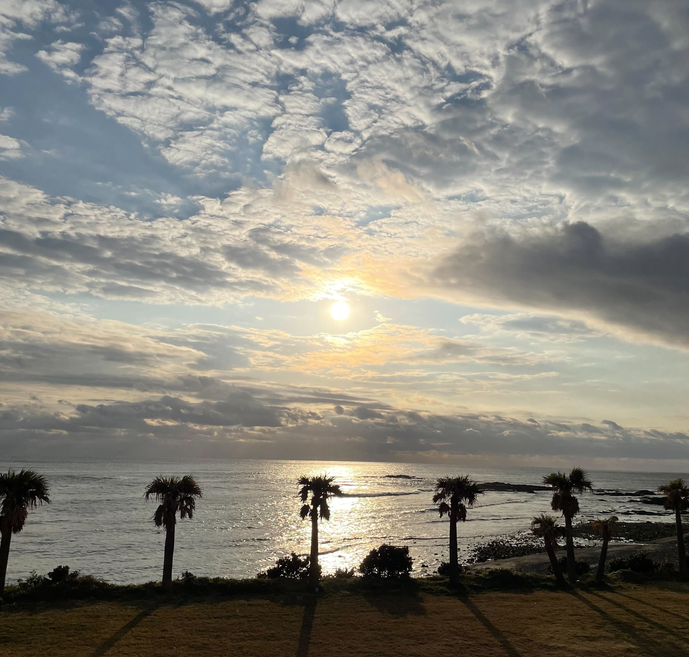

GALLERY
To be updated
Sakura (NAOJ) 2023/03/27
国立天文台(NAOJ)で行われた宇電懇シンポジウムにて博士論文の内容の一部を発表いたしました。写真は合間に構内を散策して撮影した桜です。

Ocean view in Tanegashima(種子島) 2023/01
ちょうど雨の日が続いた日に滞在していましたが、最終日にようやく日の出(ちょっと遅い)を拝めました

国立天文台(NAOJ)で行われた宇電懇シンポジウムにて博士論文の内容の一部を発表いたしました。写真は合間に構内を散策して撮影した桜です。
ちょうど雨の日が続いた日に滞在していましたが、最終日にようやく日の出(ちょっと遅い)を拝めました